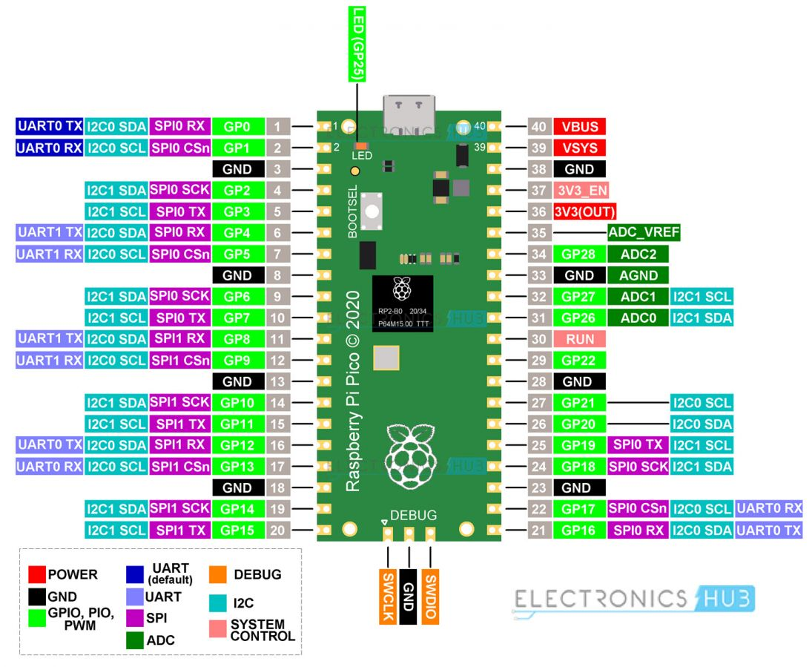
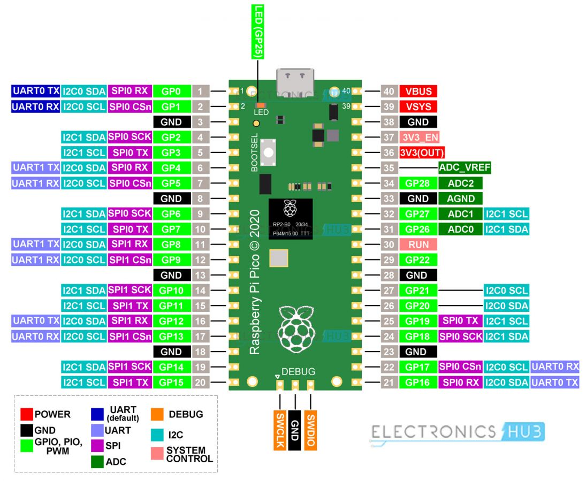

What You Need
- 🧠 Raspberry Pi Pico / Pico W
- 🔌 Micro USB Cable
- 📟 1× 7-Segment Display (Common Cathode)
- 🔘 1× Push Button Module
- ⚙️ 1× 10kΩ Resistor (for pull-down, only needed for regular push buttons without built-in resistors)
- 🔧 Breadboard + Jumper Wires
- 💻 Computer with Thonny IDE
Step-by-Step Path
🛠️ Step 1: Understand Your Display
The 7-segment display is made up of 7 LEDs (segments) labeled A to G, plus an optional decimal point (DP). By lighting up specific segments, you can display numbers from 0 to 9. This project uses a common cathode display, where all cathodes are connected to GND.

🔌 Step 2: Wire the Segments to GPIOs
Connect each segment of the 7-segment display to the GPIO pins on the Raspberry Pi Pico as shown in the circuit diagram. Use the Pico pinout image for reference to identify the correct pins.
 

🧮 Step 3: Display Numbers (0 to 9)
Create a lookup table for segments and write a show_digit() function to control which segments light up. The image below demonstrates how the 7-segment display lights up to show numbers from 0 to 9.

🔘 Step 4: Add the Push Button
Connect one leg of the push button to a GPIO pin and the other leg to GND. Use a pull-down resistor (10kΩ) to ensure the GPIO pin reads LOW when the button is not pressed. This prevents floating values and ensures reliable input detection.

🔁 Step 5: Increment Display
Press the button to increment the number on the display. The display resets to 0 after reaching 9. The animation below demonstrates the program in action.

Mini Project: DIY Floor Counter Display
from machine import Pin
import time
# Map GPIOs to 7-segment segments
segment_pins = {
'A': Pin(0, Pin.OUT),
'B': Pin(1, Pin.OUT),
'C': Pin(2, Pin.OUT),
'D': Pin(3, Pin.OUT),
'E': Pin(4, Pin.OUT),
'F': Pin(5, Pin.OUT),
'G': Pin(6, Pin.OUT)
}
# Segment patterns for 0-9 (1 = ON)
digit_patterns = {
0: ['A', 'B', 'C', 'D', 'E', 'F'],
1: ['B', 'C'],
2: ['A', 'B', 'G', 'E', 'D'],
3: ['A', 'B', 'C', 'D', 'G'],
4: ['F', 'G', 'B', 'C'],
5: ['A', 'F', 'G', 'C', 'D'],
6: ['A', 'F', 'G', 'C', 'D', 'E'],
7: ['A', 'B', 'C'],
8: ['A', 'B', 'C', 'D', 'E', 'F', 'G'],
9: ['A', 'B', 'C', 'D', 'F', 'G']
}
# Push button input (active HIGH with internal pull-down)
button = Pin(10, Pin.IN, Pin.PULL_DOWN)
def show_digit(num):
# Turn off all segments first
for seg in segment_pins:
segment_pins[seg].value(0)
# Turn on only required segments
for seg in digit_patterns[num]:
segment_pins[seg].value(1)
current_digit = 0
last_button_state = 0
while True:
button_state = button.value()
if button_state and not last_button_state:
# Rising edge detected
current_digit = (current_digit + 1) % 10
show_digit(current_digit)
time.sleep(0.2) # Debounce delay
last_button_state = button_state🎮 User presses button → display goes from 0 → 1 → 2 → ... → 9 → 0
🌟 Bonus: Add a second button to count down!
Complete Tutorial (Watch on YouTube)
Quick Recap
- ✅ Understand GPIO for output (7-segment)
- ✅ Understand GPIO for input (button)
- ✅ Combine input and output in logic
- ✅ Real-time feedback loop created